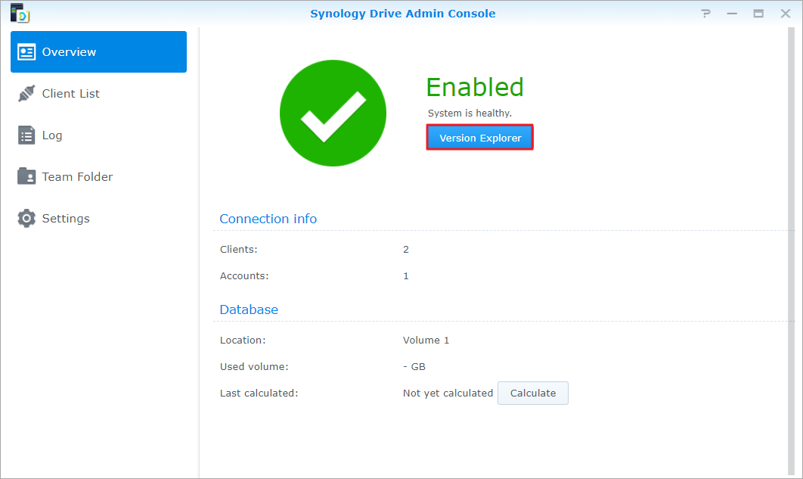

總覽
Synology Drive Server 是一款精心設計的跨平台同步軟體，可智慧化地備份使用者個人電腦中的資料；Synology Drive Client 為其桌面公用程式，亦是快速且節省流量的即時備份解決方案，提供完整的保護，每個檔案可保留最多 32 個歷史版本。
在 Synology NAS 上設定 Synology Drive Server 並下載 Synology Drive Client
- 前往套件中心以尋找 Synology Drive Server，並按一下安裝。將會一併下載三個套件：Synology Drive 管理主控台、Synology Drive ShareSync、Synology Drive。
- 開啟 Synology Drive，右下角會出現下載 Synology Drive Client 的提示。

或按一下左下角的使用者圖示，前往用戶端 > 下載用戶端。

此外，您亦可從 Synology 下載中心下載 Synology Drive Client。 - 在電腦上開啟安裝程式，並依照指示安裝 Synology Drive Client。安裝完成後，按一下立即開始來執行 Synology Drive Client。

- 選擇備份任務。

- 輸入執行 Synology Drive Server 的 Synology NAS 位址 或 QuickConnect ID、使用者名稱、密碼。您也可以按一下右邊的搜尋圖示讓 Synology Drive Client 自動搜尋網域內可用的 Synology NAS。按下一步。

- 選取備份來源，並取消勾選您不想同步的子資料夾。Synology Drive Client 會在您選擇的目的地建立一個與電腦名稱相同的備份資料夾，預設的目的地資料夾為 home 資料夾。若您想要使用不在清單上的資料夾，請聯絡系統管理員，管理員可以參考 Synology Drive 管理主控台的說明文章頁面。若您想設定同步過濾或規則，亦可按一下備份規則。按下一步。

- 選擇一個備份模式，並按下一步。

- 檢查備份設定摘要。按一下上一步以進行變更，或按一下完成以完成設定。

- 您可以在主視窗中檢視備份進度。

在 Synology Drive Client 下載或還原檔案的先前版本
- 前往 Synology Drive Client 中的備份任務 > 還原，並找到想還原之檔案或資料夾的所在位置。

- 選擇您想要取回的檔案並按一下瀏覽先前的版本。若檔案自您的電腦上意外刪除或移除，您可以按一下還原以還原該檔案。

- 選擇您想要下載的檔案版本並按一下下載。

在 Synology Drive 管理主控台下載或還原檔案的先前版本
- 前往 DSM 中的 Synology Drive 管理主控台 > 團隊資料夾，按一下您想還原之檔案所在的資料夾，再按一下版本瀏覽器。
 - 在版本瀏覽器視窗中，按一下想要取回的檔案，再按一下瀏覽先前的版本。

- 選擇您想要下載的檔案版本並按一下下載。若您確定要還原選擇的版本，按一下還原來覆寫目前的版本。

進一步保護您的資料
若想了解更多保護與備份資料的方法，請按一下此處以瀏覽關於 DSM 其他備份功能的應用教學。